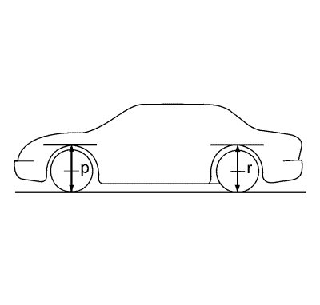

Inspección de la altura del guarnecido
Medición de la altura del guarnecido
La altura del guarnecido es una medición predeterminada relativa a la altura de marcha del vehículo. Las alturas de guarnecido incorrectas pueden provocar que el vehículo toque fondo en baches, daños en los componentes de la suspensión, y síntomas similares a problemas de alineación de las ruedas. Compruebe las alturas del guarnecido cuando diagnostique problemas de suspensión y antes de comprobar la alineación de las ruedas.
Realice lo siguiente antes de medir las alturas del guarnecido:
| • | Compruebe el nivel de combustible. Añada peso adicional si es necesario para simular un depósito lleno. |
| • | Asegúrese de que el habitáculo y el maletero están vacíos, excepto la rueda de repuesto. |
| • | Asegúrese de que el vehículo está en una superficie llana y plana como una cremallera de alineación. |
| • | Compruebe que las puertas del vehículo están bien cerradas. |
| • | Compruebe que el capó del vehículo y las tapas de la cubierta trasera están bien cerrados. |
| • | Compruebe si los accesorios o modificaciones instalados que no son de serie podrían afectar a la medición de la altura del guarnecido. |
Medida de las dimensiones P y R

Nota: Todas las dimensiones se miden de forma vertical desde el suelo. La altura debe estar entre ±10 mm (±0,39 pulg.) para poderse considerar correcta.
Use el siguiente procedimiento para comprobar las dimensiones P y R:
| • | Eleve el paragolpes delantero del vehículo hacia arriba unos 38 mm (1,5 pulg.). |
| • | Retire suavemente las manos y deje que se asiente el vehículo. |
| • | Repita esta operación 2 veces más para un total de 3. |
| • | La altura P se mide verticalmente desde el suelo hasta el reborde inferior de la apertura de la rueda a través de la línea central de la rueda delantera. |
| • | Empuje el paragolpes delantero del vehículo hacia abajo unos 38 mm (1,5 pulg.). |
| • | Retire suavemente las manos y deje que se asiente el vehículo. |
| • | Repita esta operación 2 veces más para un total de 3. |
| • | Mida la altura P como en el paso 4. |
| • | La medida de la altura verdadera de P es el promedio de las medidas tomadas en los pasos 4 a 8. |
| • | Repita los pasos anteriores en la parte trasera del vehículo para obtener las alturas de R. |
| © Copyright Chevrolet. All rights reserved |